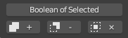
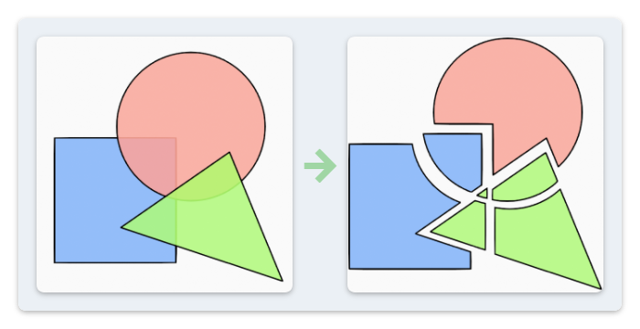

Boolean #
NijiGPen provides following 2D boolean operations on the closed paths of two or more strokes:
- Union (Sum, OR)
- Difference (Subtract, NOT)
- Intersection (AND)
- Exclusive (XOR)
These functions are realized by calling the Clipper library. Please check the link for more details.
Edit Mode Operators #

There are multiple buttons in the Edit mode panel, which are shortcuts of the same operator. This operator takes the paths of selected strokes as the input, and generate new strokes which are results of the boolean operation. You can choose to keep the input strokes or delete them.
It is possible, but not recommended to select strokes from multiple layers, since it is not intuitive to judge in which layer the output strokes should be generated and how they should be arranged.
Stroke Attributes #
The output strokes inherit the point attributes of the input strokes, including radius, strength, depth and vertex color. However, if the input strokes have different stroke attributes, e.g., the fill color and the assigned material, the output strokes can only choose one of them to inherit. There is an option to specify the criterion for such inheritance.
Cases of 3 or More Shapes #
The expected result of two input strokes is straightforward. However, with three or more input strokes, there may be multiple ways to finish the operation.
The figure above is an example of performing the Difference operation on 3 shapes. The numbers of Subjects and Clips need to be specified in the options.
Also, the sequence of stroke selection matters. The first selected strokes are regarded as Subjects, and the last selected strokes are Clips.
Fracture #

Fracture is another boolean operation. It detects the overlapping area of selected shapes, and breaks the shapes into smaller parts. The output shapes will no longer overlap with each other.
Draw Mode Operators #
The boolean operators are also available in the Draw mode. In this mode, it will take the latest drawn stroke as the Clip, and perform the operation on each stroke overlapping with it in the same layer.
Boolean Eraser Tool #
In addition to the panel button, a tool named Boolean Eraser is available in the viewport.
Blender's native eraser tool removes vertices rather than area from a shape, and sometimes appears unintuitive. This add-on's eraser tool aims at resembling the experience of traditional painting software.
The user can use mouse or stylus to remove areas from a shape. Several brush options are available to assist drawing, including Brush Size, Smooth Level and Shape of Caps.
When drawing in the 3D space and the strokes are far from the origin, the results of the Boolean Eraser may become unexpected because of perspective distortion. In this case, it is recommended to switch the view to orthographic projection.